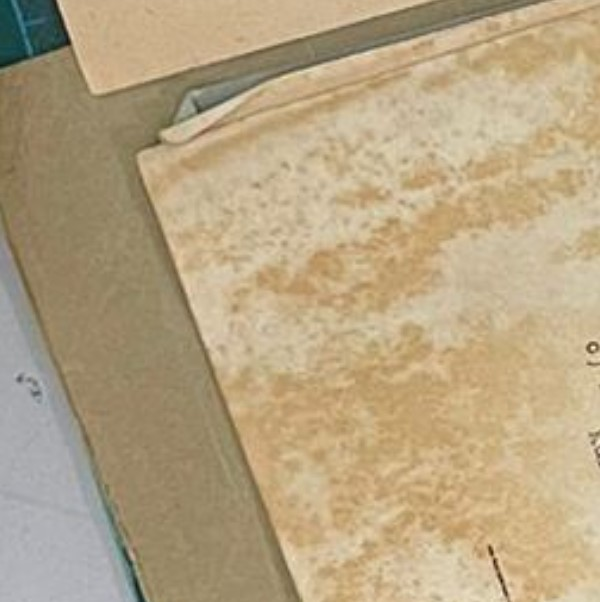

Extensive brown stains covering the paper in the example above
Foxing
Description
Foxing is the result of both mold and metal contaminants in paper. Foxing appears as brown, yellow, or red stains on the paper, often in spidery spots or blotches.
Treatment Notes
- Reduce sources of contaminants where possible by surface cleaning
- Rehouse in acid-free housing to slow down the process
Materials Affected
Paper, Books